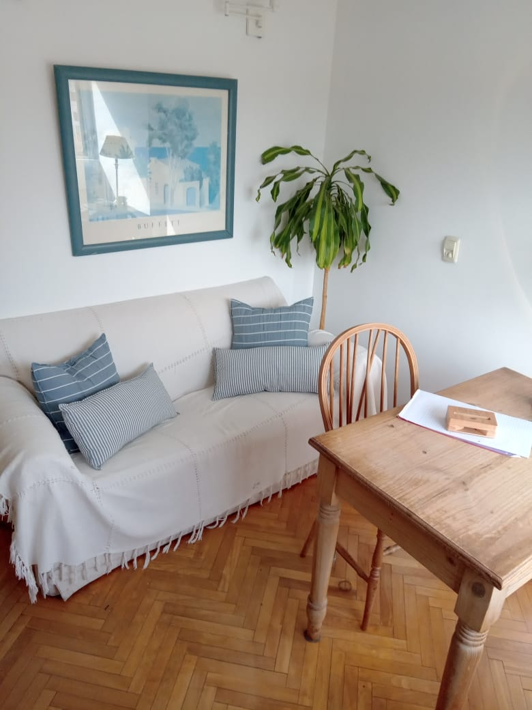
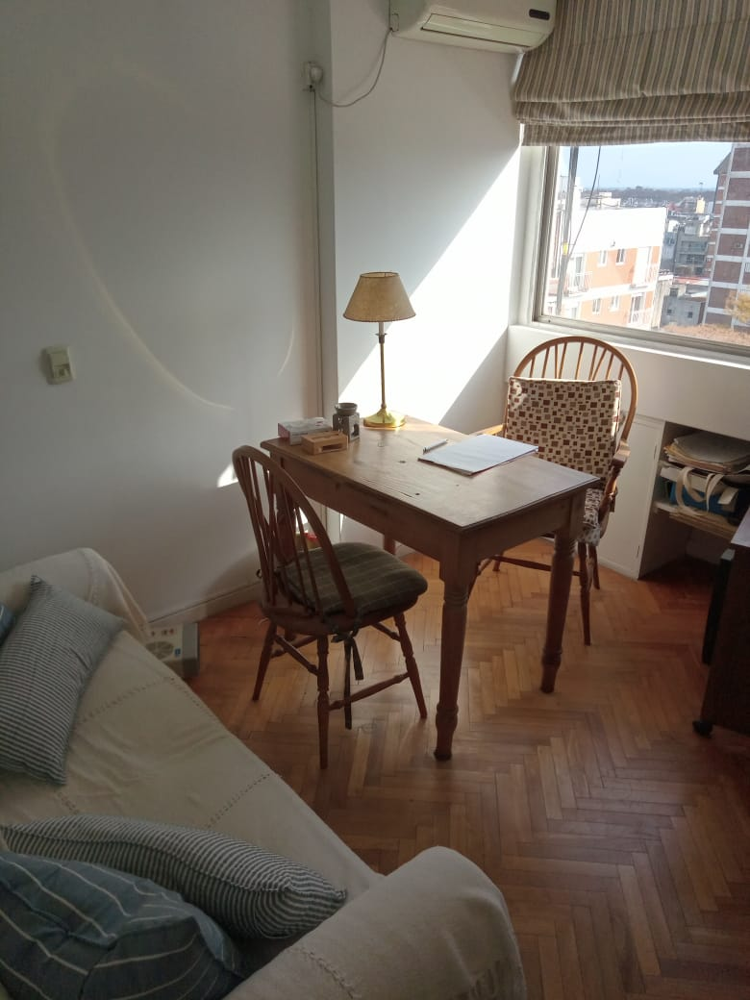
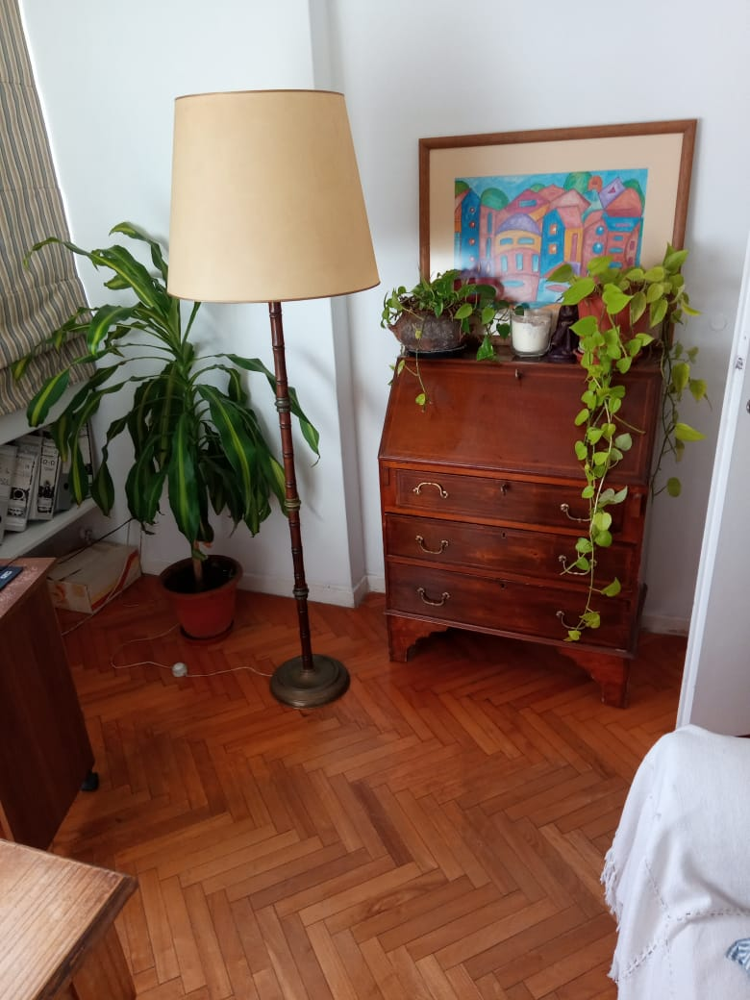

Psicólogo · San Isidro
Un lugar tranquilo para hablar de lo que te pasa.
Consultorio en San Isidro, de lunes a viernes.
Los botones de contacto se activan cuando arrancamos con la versión oficial.
- Rivadavia 195San Isidro
- Lunes a jueves10 a 20 h
- Viernes10 a 15 h
Mirá y escuchá
Videos cortos, simples y prácticos.
Para que quien entre te vea y te escuche antes de escribirte: una presentación breve y un video sobre un tema de la vida diaria en las relaciones, sin tecnicismos.
El consultorio
Luz natural, plantas y madera.
Las consultas son en Rivadavia 195, en San Isidro, en un ambiente reservado y tranquilo.



Cómo empezar
Tres pasos para el primer encuentro.
Escribime
Un mensaje corto alcanza.
Coordinamos
Acordamos un día y una hora, de lunes a viernes.
Nos encontramos
En el consultorio de Rivadavia 195, San Isidro.
Horarios y dirección
De lunes a viernes.
| Lunes a jueves | 10:00 a 20:00 |
|---|---|
| Viernes | 10:00 a 15:00 |
| Sábado y domingo | Cerrado |
San Isidro, Provincia de Buenos Aires Teléfono: 011 4935-2603
Escribime y coordinamos.
Consultorio en San Isidro, de lunes a viernes.
Los botones de contacto se activan cuando arrancamos con la versión oficial.